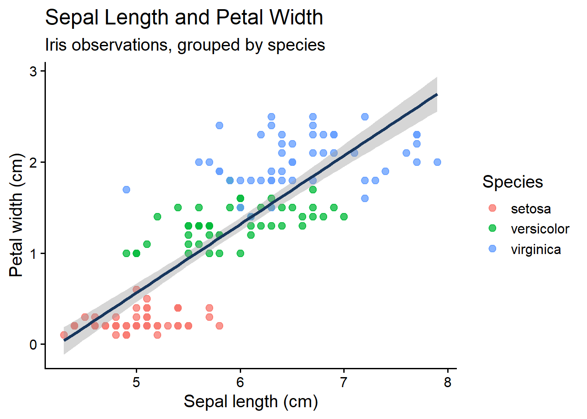

Regression helps us describe how an outcome changes with one or more predictors. We will explore the model-building workflow using R datasets, interpret coefficients carefully, and learn how to evaluate model assumptions.
NoteLearning objectives
By the end of this lesson, you should be able to:
Fit and interpret simple and multiple linear regression models.
Check model assumptions and inspect diagnostic plots.
Use gtsummary::tbl_regression() to format regression results for a report.
16.1 Load Packages and Explore the Data
library(tidyverse)library(gtsummary)# we will use the iris data for linear regressiondata(iris)glimpse(iris)
Before we jump to straight to modeling, we want to visualize the relationship between the outcome and predictor(s). Here we will look at Sepal.Length and Petal.Width in the iris dataset, grouped by species.
We are adding in a fitted line (that is a regression line!) and the confidence band to help visualize the mean relationship, geom_smooth(method = "lm"). The fitted line is a linear regression of petal width on sepal length, and the confidence band shows uncertainty around the estimated mean relationship.
ggplot(iris, aes(x = Sepal.Length, y = Petal.Width)) +geom_point(aes(color = Species), size =2.5, alpha =0.75) +geom_smooth(method ="lm", se =TRUE, color ="#17365D") +labs(title ="Sepal Length and Petal Width",subtitle ="Iris observations, grouped by species",x ="Sepal length (cm)",y ="Petal width (cm)",color ="Species") +theme_classic(base_size =15)

TipRead this as…
aes(x = Sepal.Length, y = Petal.Width) tells ggplot2 which variables belong on each axis. The points show individual flowers; geom_smooth(method = "lm") overlays a fitted straight line and a confidence band for the estimated mean relationship.
16.3 Mathematical Check: Correlation
Next we look at the correlation between the two variables. Correlation is a measure of the strength and direction of a linear relationship between two continuous variables. Correlation ranges from -1 to 1, where -1 indicates a perfect negative linear relationship, 0 indicates no linear relationship, and 1 indicates a perfect positive linear relationship.
Pearson's product-moment correlation
data: iris$Sepal.Length and iris$Petal.Width
t = 17.296, df = 148, p-value < 2.2e-16
alternative hypothesis: true correlation is not equal to 0
95 percent confidence interval:
0.7568971 0.8648361
sample estimates:
cor
0.8179411
TipRead this as…
The correlation between Sepal.Length and Petal.Width is 0.81, meaning that there is a strong positive linear relationship between the two variables. As sepal length increases, petal width tends to increase as well. Correlation summarizes the strength and direction of a linear association, but does not establish causation.
16.4 Simple Linear Regression
A linear regression estimates a mean outcome as a function of one or more predictors. We will start with a simple model with the same two variables. We will introduce our desired relationship with a formula, which is where we specify the dependent (y; outcome) and independent (x; exposure) variables. Like this: y ~ x. We will place the formula inside of the function lm() which literally stands for linear model.
summary() is the best way to view every part of the output. But there are many components of the model that can be accessed individually. Use ls(model1) to see all the components of the model object.
confint(model1) provides confidence intervals for the coefficients. The confidence interval is a range of values that is likely to contain the true population parameter with a certain level of confidence (usually 95%). If the confidence interval does not include zero, it suggests that the predictor has a statistically significant effect on the outcome.
model1 <-lm(Petal.Width ~ Sepal.Length, data = iris)summary(model1)
Call:
lm(formula = Petal.Width ~ Sepal.Length, data = iris)
Residuals:
Min 1Q Median 3Q Max
-0.96671 -0.35936 -0.01787 0.28388 1.23329
Coefficients:
Estimate Std. Error t value Pr(>|t|)
(Intercept) -3.20022 0.25689 -12.46 <2e-16 ***
Sepal.Length 0.75292 0.04353 17.30 <2e-16 ***
---
Signif. codes: 0 '***' 0.001 '**' 0.01 '*' 0.05 '.' 0.1 ' ' 1
Residual standard error: 0.44 on 148 degrees of freedom
Multiple R-squared: 0.669, Adjusted R-squared: 0.6668
F-statistic: 299.2 on 1 and 148 DF, p-value: < 2.2e-16
TipRead this as…
lm(Petal.Width ~ Sepal.Length, data = iris) asks R to model Petal.Width as the outcome and Sepal.Length as the predictor. The intercept is the fitted petal width when sepal length is zero (which may be outside the observed range). The slope describes the expected change in petal width for each one-centimeter increase in sepal length, on average.
confint(model1) provides confidence intervals for the coefficients. The confidence interval is a range of values that is likely to contain the true population parameter with a certain level of confidence (usually 95%). If the confidence interval does not include zero, it suggests that the predictor has a statistically significant effect on the outcome.
It is important to check the assumptions of linear regression to ensure that the model is appropriate for the data. We want to look at the residuals to assess the model’s fit. Here we will create a residuals-versus-fitted plot and a normal Q–Q plot of the residuals. The residuals-versus-fitted plot helps us assess whether the relationship is linear and whether the variance of the residuals is constant (known as homoscedasticity). The normal Q–Q plot helps us assess whether the residuals are normally distributed.
model_diagnostics <-tibble(fitted =fitted(model1),residual =resid(model1))# Residuals vs Fitted Plotggplot(model_diagnostics, aes(x = fitted, y = residual)) +geom_point(color ="#167C80", alpha =0.75) +geom_hline(yintercept =0, linetype ="dashed", color ="grey40") +labs(title ="Residuals Versus Fitted Values", x ="Fitted petal width", y ="Residual") +theme_classic(base_size =15)
A residual is the difference between the actual observation and the predicted outcome. On the residual-versus-fitted plot, look for systematic curves or changing spread rather than a random cloud around zero. On the Q–Q plot, large departures from the reference line may indicate that residuals do not follow a normal distribution. Diagnostics should be interpreted together, not as independent pass/fail tests.
16.5 Multiple Linear Regression
Multiple linear regression allows us to include more than one predictor in the model. Here we will add Sepal.Width as a second predictor (independent variable/confounder). The interpretation of the coefficients changes when we add additional predictors.
model2 <-lm(Petal.Width ~ Sepal.Length + Sepal.Width, data = iris)summary(model2)
Call:
lm(formula = Petal.Width ~ Sepal.Length + Sepal.Width, data = iris)
Residuals:
Min 1Q Median 3Q Max
-0.7231 -0.2973 -0.0566 0.1929 1.1088
Coefficients:
Estimate Std. Error t value Pr(>|t|)
(Intercept) -1.56349 0.33911 -4.611 8.66e-06 ***
Sepal.Length 0.72329 0.03876 18.659 < 2e-16 ***
Sepal.Width -0.47872 0.07364 -6.501 1.17e-09 ***
---
Signif. codes: 0 '***' 0.001 '**' 0.01 '*' 0.05 '.' 0.1 ' ' 1
Residual standard error: 0.3891 on 147 degrees of freedom
Multiple R-squared: 0.7429, Adjusted R-squared: 0.7394
F-statistic: 212.4 on 2 and 147 DF, p-value: < 2.2e-16
The coefficient for Sepal.Length now describes the expected change in petal width for a one-centimeter increase in sepal length while holding sepal width constant. Adding a predictor changes the interpretation of each coefficient. The fitted model is still just measuring an association unless the study design supports causal claims.
16.6 Present Regression Results with gtsummary
Using summary() and confint() is a bit clunky for reporting results. They are great for quick understanding of model results, but not very useful once you leave R.
The gtsummary package provides a convenient way to format regression results for publication. The tbl_regression() function takes a fitted model object and produces a nicely formatted table of coefficients, standard errors, confidence intervals, and p-values. Complete tutorials are here.
library(gtsummary)tbl_regression(model2)
Characteristic
Beta
95% CI
p-value
Sepal.Length
0.72
0.65, 0.80
<0.001
Sepal.Width
-0.48
-0.62, -0.33
<0.001
Abbreviation: CI = Confidence Interval
TipRead this as…
tbl_regression(model2) formats linear regression coefficients and uncertainty. For a logistic model, exponentiate = TRUE reports odds ratios instead of log-odds coefficients. Always label the type of model and the scale of the estimate in a research report.
And as we learned with summary tables, tbl_regression() can be modified to out liking, including formatting labels, rounding, and adding confidence intervals.
Copy the code below into an R Script and see if you can apply what you have learned here.
# ============================================================# LINEAR REGRESSION: STUDENT PRACTICE# Work through the tasks in order in your R Project.# Use the Boston dataset from the MASS package.# ============================================================# SETUP ------------------------------------------------------library(tidyverse)library(MASS)library(gtsummary)# Load the Boston datasetdata(Boston)# Outcome: medv (median home value, in $1,000s)# Predictors:# nox = Nitric oxides concentration# crim = Per capita crime rate# rm = Average number of rooms per dwelling# ptratio = Pupil-teacher ratio# PART 1: VISUALIZATION AND CORRELATION -----------------------# TASK 1: Using ggplot2, create a scatterplot examining the# relationship between nox and medv. Add a fitted linear# regression line using geom_smooth(method = "lm").# Include appropriate labels and theme_classic().# TASK 2: Fit a preliminary linear regression model predicting# medv from nox. Extract the residuals and create a Q-Q plot.# Do the residuals appear approximately normally distributed?# TASK 3: Use cor.test() to calculate the Pearson correlation# between nox and medv. Report the correlation coefficient# and p-value. Is the relationship positive or negative?# PART 2: SIMPLE LINEAR REGRESSION ----------------------------# TASK 4: Use lm() to fit a simple linear regression model# predicting medv from nox. Save the model as model_1.# Use summary() to examine the results.# Interpret the regression coefficient for nox.# PART 3: MULTIPLE LINEAR REGRESSION --------------------------# TASK 5: Fit a multiple linear regression model predicting# medv from nox, crim, rm, and ptratio.# Save the model as model_2 and display summary().# Compare the coefficient for nox between model_1 and model_2.# Does the association change after adjustment?# PART 4: PRESENTING REGRESSION RESULTS -----------------------# TASK 6: Use gtsummary::tbl_regression() to present model_2# in a formatted table. Include regression coefficients,# 95% confidence intervals, and p-values.# Use bold_p() to highlight statistically significant results.# REFLECTION -------------------------------------------------# What is the difference between simple and multiple linear# regression? Why might the coefficient for nox change after# adding additional predictors to the model?# Write your answer as a comment below.